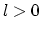
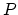
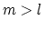

Next: 8. Discretization
Up: 7. Gridding
Previous: 7.1 Terminology
Contents
Index
7.2 Gridding Requirements
- The union of subgrids at level 0 must cover the entire problem domain.
The union of subgrids at a refined level 
may only cover a portion of the problem domain.
- Subgrids may overlap.
- The computed solution at a point 
in the problem domain
is defined to be the value at the point on the finest subgrid containing it.
(note: we use ``vertex centered'' gridding, not ``cell centered'')
- The region of the domain covered by level  subgrids
must be contained in the region covered by level subgrids.
This containment is not required to be proper (since we have vertex
centered grids).
Next: 8. Discretization
Up: 7. Gridding
Previous: 7.1 Terminology
Contents
Index
Steve Smith
2008-06-02